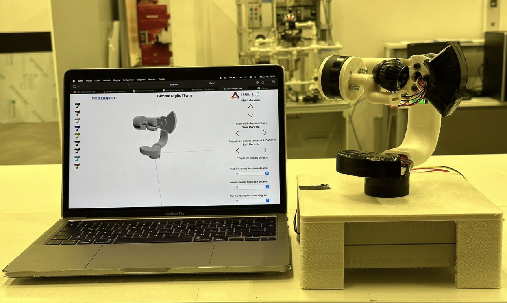
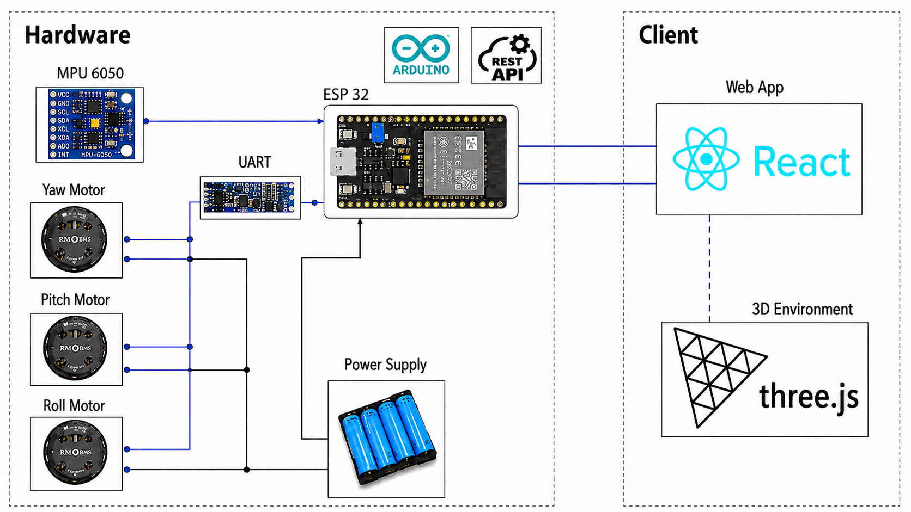

Project Overview
This project is a senior design project focused on developing a 3-DOF gimbal system integrated with a real-time digital twin. The project includes the mathematical modeling of the gimbal using rotation matrices and kinematic relations, mechanical design of the system in SOLIDWORKS, production of 3D-printed components, hardware integration with ESP32, MPU6050 IMU sensor, and BLDC motors, and the development of a web-based digital twin interface. Sensor data from the physical gimbal is transferred wirelessly to the virtual model, allowing the real and digital systems to move synchronously. This project demonstrates the use of digital twin technology for monitoring, visualization, and development of inertially stabilized platforms.
The final prototype uses a NodeMCU ESP-32S, an MPU6050 accelerometer/gyroscope, three MS5005V3 BLDC motors with integrated encoders and drivers, a UART-TTL to RS485 converter, and a 22V battery with voltage regulation. The ESP32 reads the IMU over I2C, calculates the yaw, pitch, and roll motor targets from the inverse kinematic model, drives the motors over an RS485 bus, and exposes the current system state through a Wi-Fi REST API.
System Architecture
The system is split into hardware and client layers. On the
hardware side, custom Arduino firmware on the ESP32 connects to the
local Wi-Fi network, reads IMU orientation data, computes the
required motor angles, and sends position commands to the motor bus.
It also serves JSON data through HTTP endpoints, including a
/getAll state endpoint used by the digital twin.
On the client side, a React application polls the ESP32 every 100
milliseconds and updates a Three.js model so the virtual gimbal
follows the physical prototype in real time.

- NodeMCU ESP-32S — main controller, Wi-Fi station, Arduino firmware, and REST API server
- MPU6050 — 6-axis IMU connected over I2C for base orientation estimation
- MS5005V3 BLDC motors — yaw, pitch, and roll axes with integrated encoders, drivers, and RS485 communication
- Power system — 22V battery supply stepped down to 5V for the ESP32 and converter
- React — web interface for monitoring and commanding the gimbal
- REST / JSON — wireless data exchange between the physical prototype and browser client
- Three.js — animated 3D environment rendering the synchronized digital twin